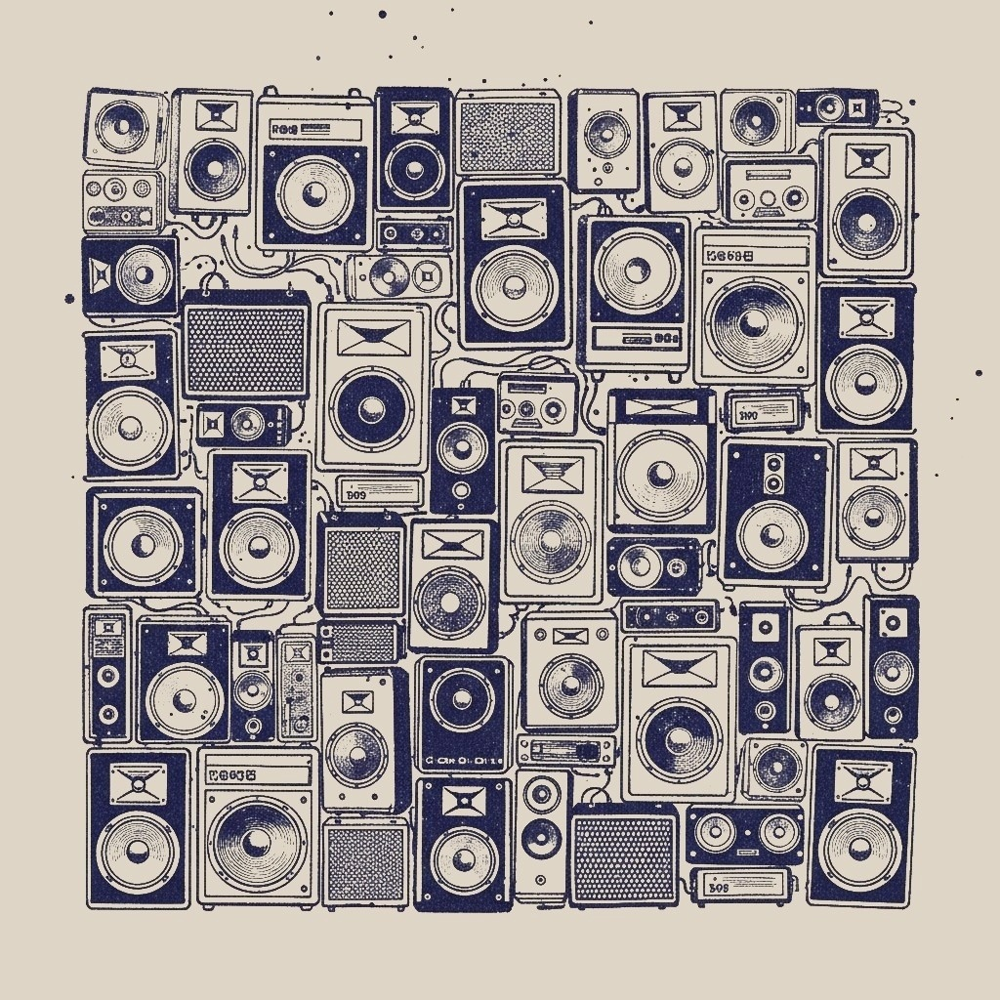
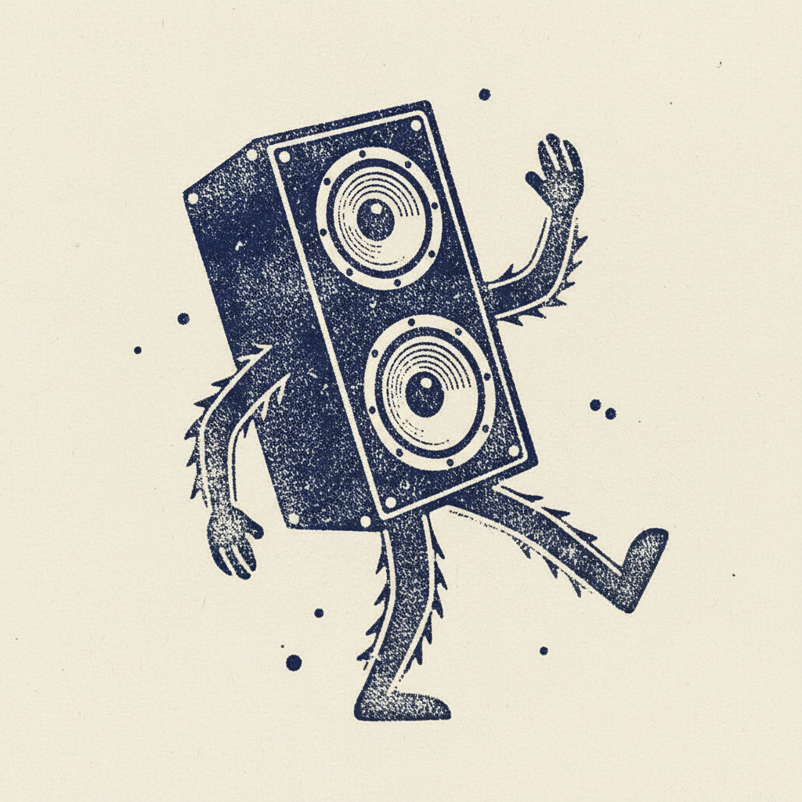
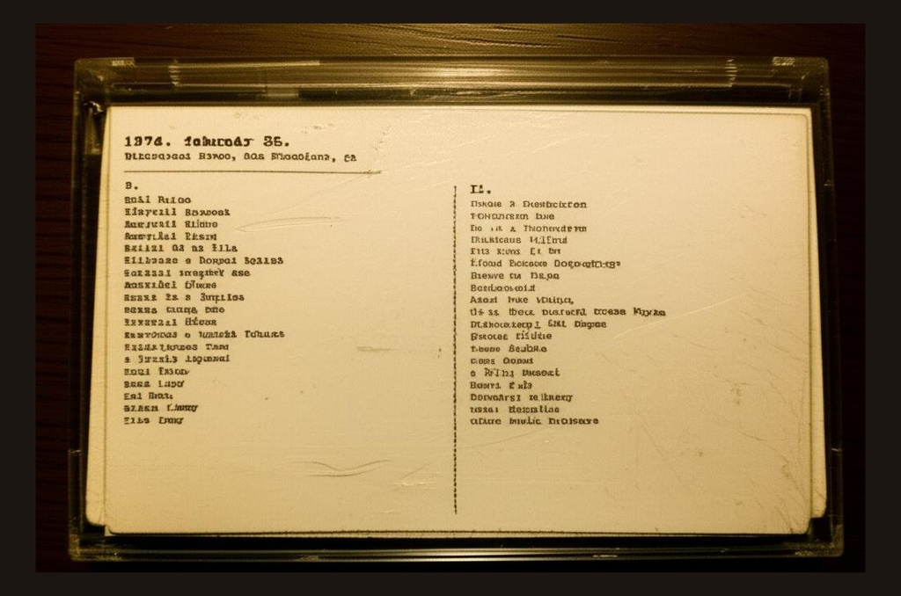
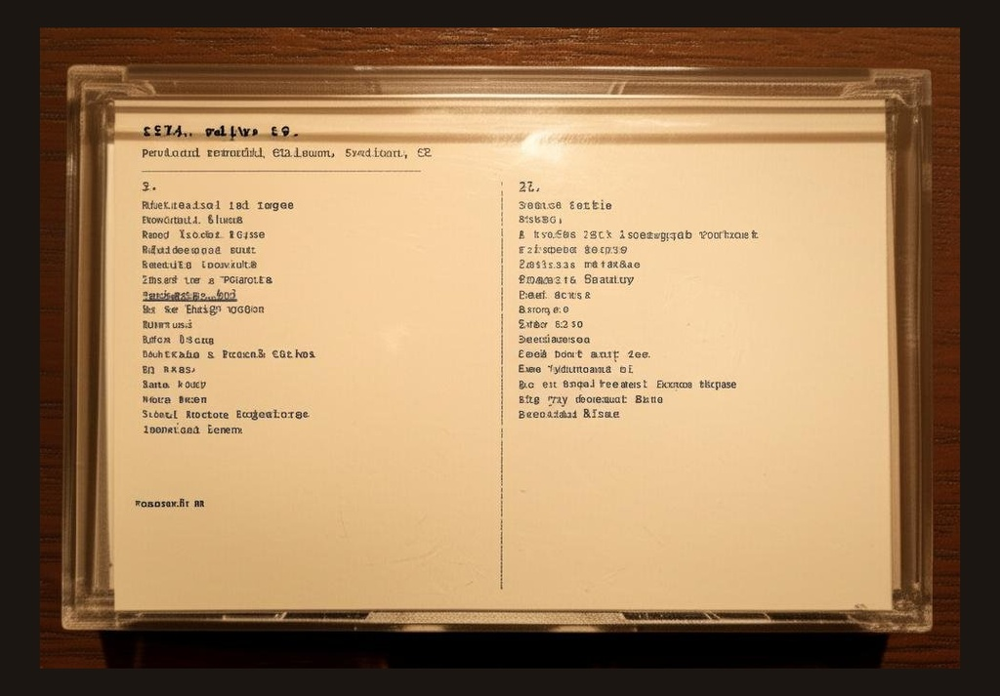
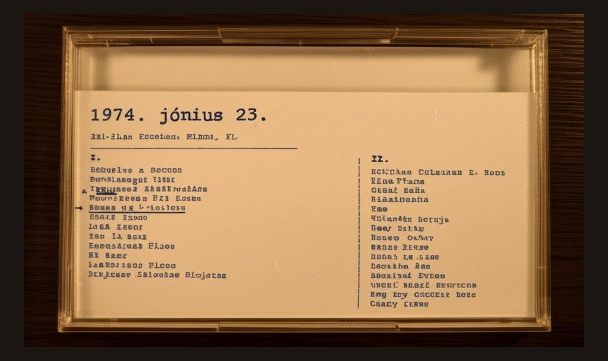
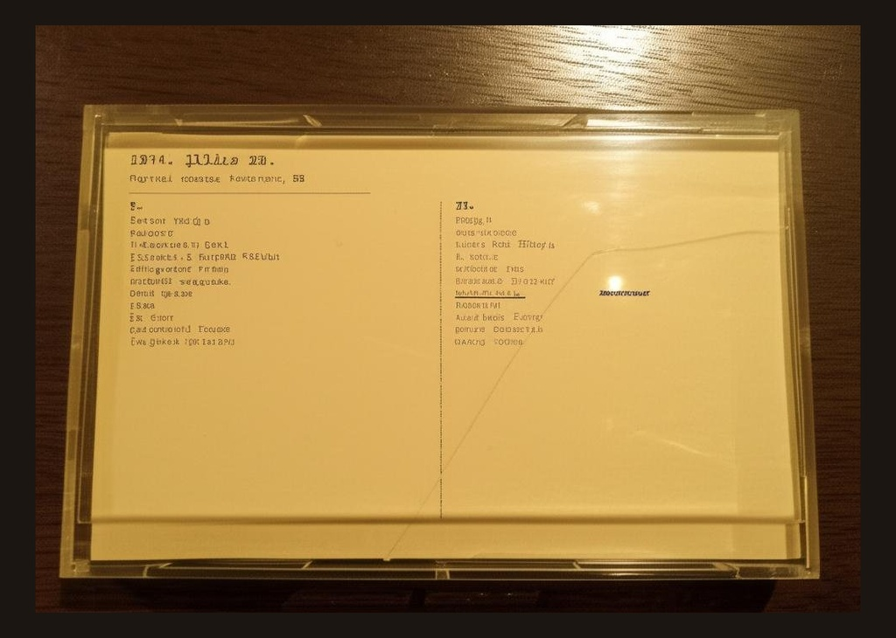
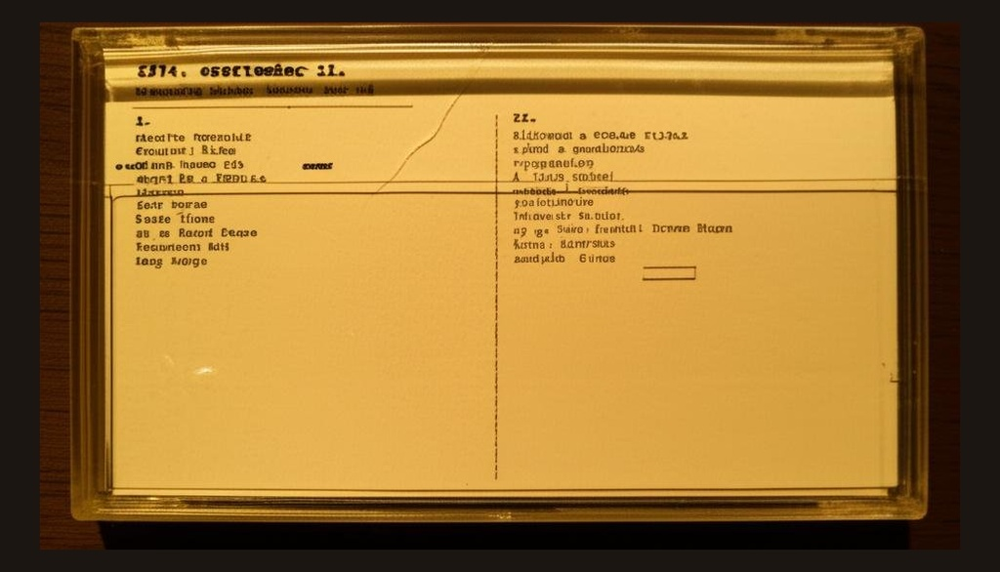

He prefers not to give his name. He is a retired sound engineer who worked at Hungarian Radio through the 1970s and '80s, and his interest in the Grateful Dead began as a technical fascination with the Wall of Sound — a forty-foot PA system designed by Owsley Stanley that used 604 individual speakers and weighed seventy-five tons. He acquired his first Dead tape from an American journalist passing through Budapest in 1981 and spent the next four decades building a collection focused exclusively on 1974 — the only year the Wall of Sound was in operation. The tapes are stored in wooden crates in his apartment, catalogued by date in a hand-bound ledger. He agreed to loan the collection on the condition that his name not be published.
The Wall of Sound was the most ambitious live sound system ever built. Every instrument had its own dedicated speaker column. The vocals ran through a separate system entirely. Two complete rigs leapfrogged across the country — one being set up at the next venue while the other was in use. It cost a fortune and required a crew of twenty-one to operate. The band played 37 shows under this system between February and October of 1974, then stopped touring entirely. They wouldn't play again for over a year. The recordings from this period have an openness and clarity that nothing else from the era matches — you can hear the room, the separation between instruments, Phil Lesh's bass occupying its own physical space in the mix.
Each tape in the collection has a J-card insert — the setlist, venue, and date in the collector's handwriting. Turn your phone sideways in the app to see them.





Listen to Six Hundred Four in the XLIIs app.